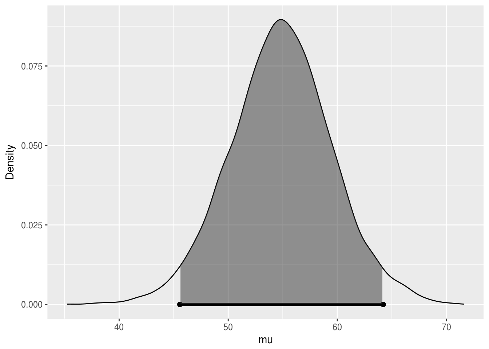
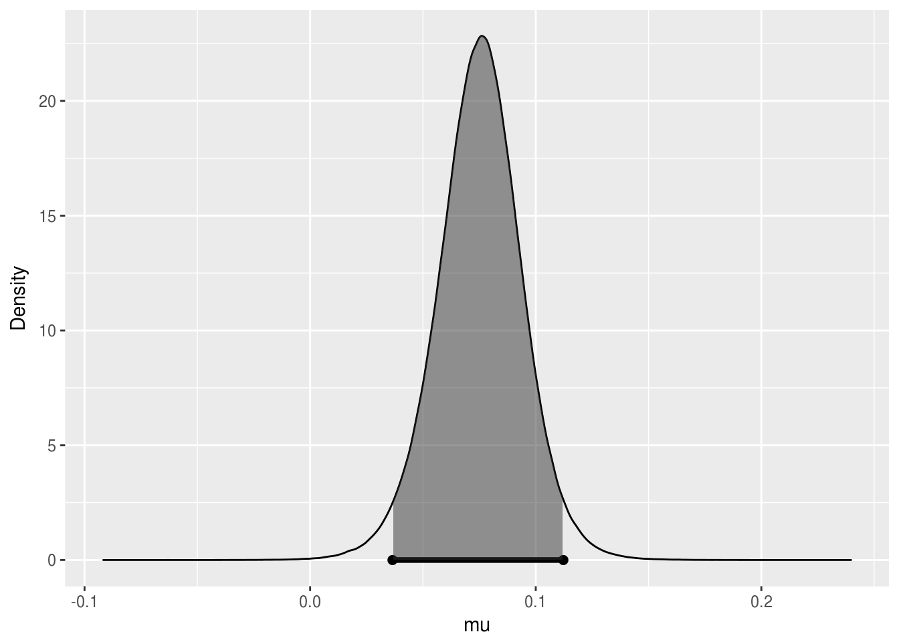

Chapter 3 Introduction to Losses and Decision-making
In the previous chapter, we learned about continuous random variables. That enabled us to study conjugate families, such as the beta binomial, the poisson gamma, and the normal normal. We also considered the difficulties of eliciting a personal prior, and of handling inference in nonconjugate cases. Finally, we introduced the credible interval and studied predictive inference.
In this new chapter, we will introduce loss functions and Bayesian decision making, minimizing expected loss for hypothesis testing, and define posterior probabilities of hypothesis and base factors. We will then outline Bayesian testing for two proportions and two means, discuss how findings from credible intervals compare to those from our hypothesis test, and finally discuss when to reject, accept, or wait.
3.1 Losses and Decision Making
To a Bayesian, the posterior distribution is the basis of any inference, since it integrates both his/her prior opinions and knowledge and the new information provided by the data. It also contains everything she believes about the distribution of the unknown parameter of interest.
However, the posterior distribution on its own is not always sufficient. Sometimes the inference we want to express is a credible interval, because it indicates a range of likely values for the parameter. That would be helpful if you wanted to say that you are 95% certain the probability of an RU-486 pregnancy lies between some number \(L\) and some number \(U\). And on other occasions, one needs to make a single number guess about the value of the parameter. For example, you might want to declare the average payoff for an insurance claim or tell a patient how much longer he/she has to live.
Therefore, the Bayesian perspective leads directly to decision theory. And in decision theory, one seeks to minimize one’s expected loss.
3.1.1 Loss Functions
Quantifying the loss can be tricky, and Table 3.1 summarizes three different examples with three different loss functions.
If you’re declaring the average payoff for an insurance claim, and if you are linear in how you value money, that is, twice as much money is exactly twice as good, then one can prove that the optimal one-number estimate is the median of the posterior distribution. But in different situations, other measures of loss may apply.
If you are advising a patient on his/her life expectancy, it is easy to imagine that large errors are far more problematic than small ones. And perhaps the loss increases as the square of how far off your single number estimate is from the truth. For example, if she’s told that her average life expectancy is two years, and it is actually ten, then her estate planning will be catastrophically bad, and she will die in poverty. In the case when the loss is proportional to the quadratic error, one can show that the optimal one-number estimate is the mean of the posterior distribution.
Finally, in some cases, the penalty is 0 if you are exactly correct, but constant if you’re at all wrong. This is the case with the old saying that close only counts with horseshoes and hand grenades; i.e., coming close but not succeeding is not good enough. And it would apply if you want a prize for correctly guessing the number of jelly beans in a jar. Here, of course, instead of minimizing expected losses, we want to maximize the expected gain. If a Bayesian is in such a situation, then his/her best one-number estimate is the mode of his/her posterior distribution, which is the most likely value.
There is a large literature on decision theory, and it is directly linked to risk analysis, which arises in many fields. Although it is possible for frequentists to employ a certain kind of decision theory, it is much more natural for Bayesians.
| Loss | Best Estimate |
|---|---|
| Linear | Median |
| Quadratic | Mean |
| 0/1 | Mode |
When making point estimates of unknown parameters, we should make the choices that minimize the loss. Nevertheless, the best estimate depends on the kind of loss function we are using, and we will discuss in more depth how these best estimates are determined in the next section.
3.1.2 Working with Loss Functions
Now we illustrate why certain estimates minimize certain loss functions.
Figure 3.1: Posterior
Suppose your single guess is 30, and we call this \(g\) in the following calculations. If your loss function is \(L_0\) (i.e., a 0/1 loss), then you lose a point for each value in your posterior that differs from your guess and do not lose any points for values that exactly equal your guess. The total loss is the sum of the losses from each value in the posterior.
In mathematical terms, we define \(L_0\) (0/1 loss) as
\[L_{0,i}(0,g) = \left\{ \begin{array}{cc} 0 & \text{if } g=x_i \\ 1 & \text{otherwise} \end{array}\right.\]
The total loss is \(L_0 = \sum_i L_{0,i}(0,g)\).
Let’s calculate what the total loss would be if your guess is 30. Table 3.2 summarizes the values in the posterior distribution sorted in descending order.
The first value is 4, which is not equal to your guess of 30, so the loss for that value is 1. The second value is 19, also not equal to your guess of 30, and the loss for that value is also 1. The third value is 20, also not equal to your guess of 30, and the loss for this value is also 1.
There is only one 30 in your posterior, and the loss for this value is 0 – since it’s equal to your guess (good news!). The remaining values in the posterior are all different than 30 hence, the loss for them are all ones as well.
To find the total loss, we simply sum over these individual losses in the posterior distribution with 51 observations where only one of them equals our guess and the remainder are different. Hence, the total loss is 50.
Figure 3.2 is a visualization of the posterior distribution, along with the 0-1 loss calculated for a series of possible guesses within the range of the posterior distribution. To create this visualization of the loss function, we went through the process we described earlier for a guess of 30 for all guesses considered, and we recorded the total loss. We can see that the loss function has the lowest value when \(g\), our guess, is equal to the most frequent observation in the posterior. Hence, \(L_0\) is minimized at the mode of the posterior, which means that if we use the 0/1 loss, the best point estimate is the mode of the posterior.
| i | x_i | L0: 0/1 |
|---|---|---|
| 1 | 4 | 1 |
| 2 | 19 | 1 |
| 3 | 20 | 1 |
| … | … | |
| 14 | 30 | 0 |
| … | … | |
| 50 | 47 | 1 |
| 51 | 49 | 1 |
| Total | 50 |
Figure 3.2: L0 is minimized at the mode of the posterior
Let’s consider another loss function. If your loss function is \(L_1\) (i.e., linear loss), then the total loss for a guess is the sum of the absolute values of the difference between that guess and each value in the posterior. Note that the absolute value function is required, because overestimates and underestimates do not cancel out.
In mathematical terms, \(L_1\) (linear loss) is calculated as \(L_1(g) = \sum_i |x_i - g|\).
We can once again calculate the total loss under \(L_1\) if your guess is 30. Table 3.3 summarizes the values in the posterior distribution sorted in descending order.
The first value is 4, and the absolute value of the difference between 4 and 30 is 26. The second value is 19, and the absolute value of the difference between 19 and 30 is 11. The third value is 20 and the absolute value of the difference between 20 and 30 is 10.
There is only one 30 in your posterior, and the loss for this value is 0 since it is equal to your guess. The remaining value in the posterior are all different than 30 hence their losses are different than 0.
To find the total loss, we again simply sum over these individual losses, and the total is to 346.
Again, Figure 3.3 is a visualization of the posterior distribution, along with a linear loss function calculated for a series of possible guesses within the range of the posterior distribution. To create this visualization of the loss function, we went through the same process we described earlier for all of the guesses considered. This time, the function has the lowest value when \(g\) is equal to the median of the posterior. Hence, \(L_1\) is minimized at the median of the posterior one other loss function.
| i | x_i | L1: |x_i-30| |
|---|---|---|
| 1 | 4 | 1 |
| 2 | 19 | 1 |
| 3 | 20 | 1 |
| … | … | |
| 14 | 30 | 0 |
| … | … | |
| 50 | 47 | 1 |
| 51 | 49 | 1 |
| Total | 346 |
Figure 3.3: L1 is minimized at the median of the posterior
If your loss function is \(L_2\) (i.e. a squared loss), then the total loss for a guess is the sum of the squared differences between that guess and each value in the posterior.
We can once again calculate the total loss under \(L_2\) if your guess is 30. Table 3.4 summarizes the posterior distribution again, sorted in ascending order.
The first value is 4, and the squared difference between 4 and 30 is 676. The second value is 19, and the square of the difference between 19 and 30 is 121. The third value is 20, and the square difference between 20 and 30 is 100.
There is only one 30 in your posterior, and the loss for this value is 0 since it is equal to your guess. The remaining values in the posterior are again all different than 30, hence their losses are all different than 0.
To find the total loss, we simply sum over these individual losses again and the total loss comes out to 3,732. We have the visualization of the posterior distribution. Again, this time along with the squared loss function calculated for a possible serious of possible guesses within the range of the posterior distribution.
Creating the visualization in Figure 3.4 had the same steps. Go through the same process described earlier for a guess of 30, for all guesses considered, and record the total loss. This time, the function has the lowest value when \(g\) is equal to the mean of the posterior. Hence, \(L_2\) is minimized at the mean of the posterior distribution.
| i | x_i | L2: (x_i-30)^2 |
|---|---|---|
| 1 | 4 | 1 |
| 2 | 19 | 1 |
| 3 | 20 | 1 |
| … | … | |
| 14 | 30 | 0 |
| … | … | |
| 50 | 47 | 1 |
| 51 | 49 | 1 |
| Total | 3732 |
Figure 3.4: L2 is minimized at the mean of the posterior
To sum up, the point estimate to report to your boss about the number of cars the dealership will sell per month depends on your loss function. In any case, you will choose to report the estimate that minimizes the loss.
- \(L_0\) is minimized at the mode of the posterior distribution.
- \(L_1\) is minimized at the median of the posterior distribution.
- \(L_2\) is minimized at the mean of the posterior distribution.
3.1.3 Minimizing Expected Loss for Hypothesis Testing
In Bayesian statistics, the inference about a parameter is made based on the posterior distribution, and let’s include this in the hypothesis test setting.
Suppose we have two competing hypothesis, \(H_1\) and \(H_2\). Then we get
- \(P(H_1 \text{ is true } | \text{ data})\) = posterior probability of \(H_1\)
- \(P(H_2 \text{ is true } | \text{ data})\) = posterior probability of \(H_2\)
One straightforward way of choosing between \(H_1\) and \(H_2\) would be to choose the one with the higher posterior probability. In other words, the potential decision criterion is to
- Reject \(H_1\) if \(P(H_1 \text{ is true } | \text{ data}) < P(H_1 \text{ is true } | \text{ data})\).
However, since hypothesis testing is a decision problem, we should also consider a loss function. Let’s revisit the HIV testing example in Section 1.1.2, and suppose we want to test the two competing hypotheses below:
- \(H_1\): Patient does not have HIV
- \(H_2\): Patient has HIV
These are the only two possibilities, so they are mutually exclusive hypotheses that cover the entire decision space.
We can define the loss function as \(L(d)\) – the loss that occurs when decision \(d\) is made. Then the Bayesian testing procedure minimizes the posterior expected loss.
The possible decisions (actions) are:
- \(d_1\): Choose \(H_1\) - decide that the patient does not have HIV
- \(d_2\): Choose \(H_2\) - decide that the patient has HIV
For each decision \(d\), we might be right, or we might be wrong. If the decision is right, the loss \(L(d)\) associated with the decision \(d\) is zero, i.e. no loss. If the decision is wrong, the loss \(L(d)\) associated with the decision \(d\) is some positive value \(w\).
For \(d=d_1\), we have
- Right: Decide patient does not have HIV, and indeed they do not. \(\Rightarrow L(d_1) = 0\)
- Wrong: Decide patient does not have HIV, but they do. \(\Rightarrow L(d_1) = w_1\)
For \(d=d_2\), we also have
- Right: Decide patient has HIV, and indeed they do. \(\Rightarrow L(d_2) = 0\)
- Wrong: Decide patient has HIV, but they don’t \(\Rightarrow L(d2) = w_2\)
The consequences of making a wrong decision \(d_1\) or \(d_2\) are different.
Wrong \(d_1\) is a false negative:
- We decide that patient does not have HIV when in reality they do.
- Potential consequences: no treatment and premature death! (severe)
Wrong \(d_2\) is a false positive:
- We decide that the patient has HIV when in reality they do not.
- Potential consequences: distress and unnecessary further investigation. (not ideal but less severe than the consequences of a false negative decision)
Let’s put these definitions in the context of the HIV testing example with ELISA.
Hypotheses
- \(H_1\): Patient does not have HIV
- \(H_2\): Patient has HIV
Decision
- \(d_1\): Choose \(H_1\) - decide that the patient does not have HIV
- \(d_2\): Choose \(H_2\) - decide that the patient has HIV
Losses
\(L(d_1) = \left\{ \begin{array}{cc} 0 & \text{if $d_1$ is right}\\ w_1=1000 & \text{if $d_1$ is wrong} \end{array}\right.\)
\(L(d_2) = \left\{ \begin{array}{cc} 0 & \text{if $d_2$ is right}\\ w_2=10 & \text{if $d_2$ is wrong} \end{array}\right.\)
The values of \(w_1\) and \(w_2\) are arbitrarily chosen. But the important thing is that \(w_1\), the loss associated with a false negative determination, is much higher than \(w_2\), the loss associated with a false positive determination.
Posteriors
The plus sign means that our patient had tested positive on the ELISA.
- \(P(H_1|+) \approx 0.88\) - the posterior probability of the patient not having HIV given positive ELISA result
- \(P(H_2|+) \approx 0.12\) - the posterior probability of the patient having HIV given positive ELISA result, as the complement value of \(P(H_1|+)\)
Expected losses
- \(E[L(d_1)] = 0.88 \times 0 + 0.12 \times 1000 = 120\)
- \(E[L(d_2)] = 0.88 \times 10 + 0.12 \times 0 = 8.8\)
Since the expected loss for \(d_2\) is lower, we should make this decision – the patient has HIV.
Note that our decision is highly influenced by the losses we assigned to \(d_1\) and \(d_2\).
If the losses were symmetric, say \(w_1 = w_2 = 10\), then the expected loss for \(d_1\) becomes
\[E[L(d_1)] = 0.88 \times 0 + 0.12 \times 10 = 1.2,\]
while the expected loss for \(d_2\) would not change. Therefore, we would choose \(d_1\) instead; that is, we would decide that the patient does not have HIV.
To recap, Bayesian methodologies allow for the integration of losses into the decision making framework easily. And in Bayesian testing, we minimize the posterior expected loss.
3.1.4 Posterior Probabilities of Hypotheses and Bayes Factors
In this section, we will continue with the HIV testing example to introduce the concept of Bayes factors. Earlier, we introduced the concept of priors and posteriors. The prior odds is defined as the ratio of the prior probabilities of hypotheses.
Therefore, if there are two competing hypotheses being considered, then the prior odds of \(H_1\) to \(H_2\) can be defined as \(O[H_1:H_2]\), which is equal to \(P(H_1)\) over probability of \(P(H_2)\). In mathematical terms,
\[O[H_1:H_2] = \frac{P(H_1)}{P(H_2)}\]
Similarly, the posterior odds is the ratio of the two posterior probabilities of hypotheses, written as
\[PO[H_1:H_2] = \frac{P(H_1|\text{data})}{P(H_2|\text{data})}\]
Using Bayes’ rule, we can rewrite the posterior probabilities as below:
\[\begin{aligned} PO[H_1:H_2] &= \frac{P(H_1|\text{data})}{P(H_2|\text{data})} \\ &= \frac{(P(\text{data}|H_1) \times P(H_1)) / P(\text{data}))}{(P(\text{data}|H_2) \times P(H_2)) / P(\text{data}))} \\ &= \frac{(P(\text{data}|H_1) \times P(H_1))}{(P(\text{data}|H_2) \times P(H_2))} \\ &= \boxed{\frac{P(\text{data}|H_1)}{P(\text{data}|H_2)}} \times \boxed{\frac{P(H_1)}{P(H_2)}} \\ &= \textbf{Bayes factor} \times \textbf{prior odds} \end{aligned}\]
In mathematical notation, we have
\[PO[H_1:H_2] = BF[H_1:H_2] \times O[H_1:H_2]\]
In other words, the posterior odds is the product of the Bayes factor and the prior odds for these two hypotheses.
The Bayes factor quantifies the evidence of data arising from \(H_1\) versus \(H_2\).
In a discrete case, the Bayes factor is simply the ratio of the likelihoods of the observed data under the two hypotheses, written as
\[BF[H_1:H_2] = \frac{P(\text{data}|H_1)}{P(\text{data}|H_2)}.\]
On the other hand, in a continuous case, the Bayes factor is the ratio of the marginal likelihoods, written as
\[BF[H_1:H_2] = \frac{\int P(\text{data}|\theta,H_1)d\theta}{\int P(\text{data}|\theta,H_2)d\theta}.\]
Note that \(\theta\) is the set formed by all possible values of the model parameters.
In this section, we will stick with the simpler discrete case. And in upcoming sections, we will revisit calculating Bayes factors for more complicated models.
Let’s return to the HIV testing example from earlier, where our patient had tested positive in the ELISA.
Hypotheses
- \(H_1\): Patient does not have HIV
- \(H_2\): Patient has HIV
Priors
The prior probabilities we place on these hypothesis came from the prevalence of HIV at the time in the general population. We were told that the prevalence of HIV in the population was 1.48 out of 1000, hence the prior probability assigned to \(H_2\) is 0.00148. And the prior assigned to \(H_1\) is simply the complement of this.
- \(P(H_1) = 0.99852\) and \(P(H_2) = 0.00148\)
The prior odds are
- \(O[H_1:H_2] = \dfrac{P(H_1)}{P(H_2)} = \dfrac{0.99852}{0.00148} = 674.6757\)
Posteriors
Given a positive ELISA result, the posterior probabilities of these hypotheses can also be calculated, and these are approximately 0.88 and 0.12. We will hold on to more decimal places in our calculations to avoid rounding errors later.
- \(P(H_1|+) = 0.8788551\) and \(P(H_2|+) = 0.1211449\)
The posterior odds are
- \(PO[H_1:H_2] = \dfrac{P(H_1|+)}{P(H_2|+)} = \dfrac{0.8788551}{0.1211449} = 7.254578\)
Bayes Factor
Finally, we can calculate the Bayes factor as the ratio of the posterior odds to prior odds, which comes out to approximately 0.0108. Note that in this simple discrete case the Bayes factor, it simplifies to the ratio of the likelihoods of the observed data under the two hypotheses.
\[\begin{aligned} BF[H_1:H_2] &= \frac{PO[H_1:H_2]}{O[H_1:H_2]} = \frac{7.25457}{674.6757} \approx 0.0108 \\ &= \frac{P(+|H_1)}{P(+|H_2)} = \frac{0.01}{0.93} \approx 0.0108 \end{aligned}\]
Alternatively, remember that the true positive rate of the test was 0.93 and the false positive rate was 0.01. Using these two values, the Bayes factor also comes out to approximately 0.0108.
So now that we calculated the Bayes factor, the next natural question is, what does this number mean? A commonly used scale for interpreting Bayes factors is proposed by Jeffreys (1961), as in Table 3.5. If the Bayes factor is between 1 and 3, the evidence against \(H_2\) is not worth a bare mention. If it is 3 to 20, the evidence is positive. If it is 20 to 150, the evidence is strong. If it is greater than 150, the evidence is very strong.
| BF[H_1:H_2] | Evidence against H_2 |
|---|---|
| 1 to 3 | Not worth a bare mention |
| 3 to 20 | Positive |
| 20 to 150 | Strong |
| > 150 | Very strong |
It might have caught your attention that the Bayes factor we calculated does not even appear on the scale. To obtain a Bayes factor value on the scale, we will need to change the order of our hypotheses and calculate \(BF[H_2:H_1]\), i.e. the Bayes factor for \(H_2\) to \(H_1\). Then we look for evidence against \(H_1\) instead.
We can calculate \(BF[H_2:H_1]\) as a reciprocal of \(BF[H_1:H_2]\) as below:
\[BF[H_2:H_1] = \frac{1}{BF[H_1:H_2]} = \frac{1}{0.0108} = 92.59259\]
For our data, this comes out to approximately 93. Hence the evidence against \(H_1\) (the patient does not have HIV) is strong. Therefore, even though the posterior for having HIV given a positive result, i.e. \(P(H_2|+)\), was low, we would still decide that the patient has HIV, according to the scale based on a positive ELISA result.
An intuitive way of thinking about this is to consider not only the posteriors, but also the priors assigned to these hypotheses. Bayes factor is the ratio of the posterior odds to prior odds. While 12% is a low posterior probability for having HIV given a positive ELISA result, this value is still much higher than the overall prevalence of HIV in the population (in other words, the prior probability for that hypothesis).
Another commonly used scale for interpreting Bayes factors is proposed by Kass and Raftery (1995), and it deals with the natural logarithm of the calculated Bayes factor. The values can be interpreted in Table 3.6.
| 2*log(BF[H_2:H_1]) | Evidence against H_1 |
|---|---|
| 0 to 2 | Not worth a bare mention |
| 2 to 6 | Positive |
| 6 to 10 | Strong |
| > 10 | Very strong |
Reporting of the log scale can be helpful for numerical accuracy reasons when the likelihoods are very small. Taking two times the natural logarithm of the Bayes factor we calculated earlier, we would end up with the same decision that the evidence against \(H_1\) is strong.
\[2 \times \log(92.59259) = 9.056418\]
To recap, we defined prior odds, posterior odds, and the Bayes factor. We learned about scales by which we can interpret these values for model selection. We also re-emphasize that in Bayesian testing, the order in which we evaluate the models of hypotheses does not matter. The Bayes factor of \(H_2\) versus \(H_1\), \(BF[H_2:H_1]\), is simply the reciprocal of the Bayes factor for \(H_1\) versus \(H_2\), that is, \(BF[H_1:H_2]\).
3.2 Inference and Decision-Making with Multiple Parameters
This section is focused on the extending the Normal-Normal conjugate family introduced in 2.2.3 to the problem of inference in a Normal population with an unknown mean and variance. We will introduce the Normal-Gamma conjugate family for inference about the unknown mean and variance and will present Monte Carlo simulation for inference about functions of the parameters as well as sampling from predictive distributions, which can assist with prior elucidation. For situations when limited prior information is available, we discuss a limiting case of the Normal-Gamma conjugate family, leading to priors that can be used for a reference analysis. Finally, we will show how to create a more flexible and robust prior distribution by using mixtures of the Normal-Gamma conjugate prior. For inference in this case we will introduce Markov Chain Monte Carlo, a powerful simulation method for Bayesian inference.
It is assumed that the readers have mastered the concepts of one-parameter Normal-Normal conjugate priors. Calculus is not required for this section; however, for those who are comfortable with calculus and would like to go deeper, we shall present starred sections with more details on the derivations.
3.2.1 The Normal-Gamma Conjugate Family
In 2.2.3 we described the normal-normal conjugate family for inference about an unknown mean \(\mu\) with a known standard deviation \(\sigma\) when the data were assumed to be a random sample from a normal population. In this section we will introduce the normal-gamma conjugate family for the common situation when \(\sigma\) is unknown. As both \(\mu\) and \(\sigma^2\) unknown, we will need to specify a joint prior distribution to describe our prior uncertainty about them.
Sampling Model
Recall that a conjugate pair is a sampling model for the data and prior distribution for the unknown parameters such that the posterior distribution is in the same family of distributions as the prior distribution. We will assume that the data are a random sample of size \(n\) from a normal population with mean \(\mu\) and variance \(\sigma^2\); the following is a mathematical shorthand to represent this distribution assumption
\[\begin{aligned} Y_1, \ldots Y_n {\mathrel{\mathop{\sim}\limits^{\rm iid}}}\textsf{N}(\mu, \sigma^2) \end{aligned}\] where the ‘iid’ above the distributed as symbol ‘\(\sim\)’ indicates that each of the observations are independent of the others (given \(\mu\) and \(\sigma^2\)) and are identically distributed.
Conjugate prior Back in 2.2.3, we found that with normal data, the conjugate prior for \(\mu\) when the standard deviation \(\sigma\) was known was a normal distribution. We will build on this to specify a conditional prior distribution for \(\mu\) as \begin{equation} \mu \mid \sigma^2 \sim \textsf{N}(m_0, \sigma^2/n_0) \tag{3.1} \end{equation}with hyper-parameters \(m_0\), the prior mean for \(\mu\), and \(\sigma^2/n_0\) the prior variance. While previously the variance was a known constant \(\tau^2\), replacing \(\tau^2\) with a multiple of \(\sigma^2\) is needed for representing the joint conjugate prior for the mean and variance. Because \(\sigma\) has the same units as the data, the hyper-parameter \(n_0\) is unitless, but is used to express our prior precision about \(\mu\) with larger values of \(n_0\) indicating more precision and smaller values less precision. We will see later how the hyper-parameter \(n_0\) may be interpreted as a prior sample size.
As \(\sigma^2\) is unknown, a Bayesian would use a prior distribution to describe the uncertainty about the variance before seeing data. Since the variance is non-negative, continuous, and with no upper limit, a gamma distribution is a candidate prior for the variance, based on the distributions that we have seen so far. However, that choice does not lead to a posterior distribution in the same family or that is recognizable as any common distribution. It turns out that the the inverse of the variance, which is known as the precision, has a conjugate gamma prior distribution. Letting \(\phi = 1/\sigma^2\) denote the precision or inverse variance, the conjugate prior for \(\phi\), \begin{equation} \phi \sim \textsf{Gamma}\left(\frac{v_0}{2}, \frac{v_0 s^2_0}{2} \right) \tag{3.2} \end{equation}is a gamma distribution with hyper-parameters \(v_0\), prior degrees of freedom, and \(s^2_0\) a prior variance or guess for \(\sigma^2\). Equivalently we may say that the inverse of the variance has a \[1/\sigma^2 \sim \textsf{Gamma}(v_0/2, s^2_0 v_0/2)\]
gamma distribution to avoid using a new symbol. Together the Normal conditional distribution for \(\mu\) given \(\sigma^2\) in (3.1) and the marginal Gamma distribution for \(\phi\) in (3.2) lead to a joint distribution for the pair \((\mu, \phi)\) that we will call the Normal-Gamma family of distributions: \begin{equation}(\mu, \phi) \sim \textsf{NormalGamma}(m_0, n_0, s^2_0, v_0) (\#eq:04-conjugate-normal-gamma) \end{equation}with the four hyper-parameters \(m_0\), \(n_0\), \(s^2_0\), and \(v_0\).
Posterior Distribution
As a conjugate family, the posterior distribution of the pair of parameters (\(\mu, \phi\)) is in the same family as the prior distribution when the sample data arise from a normal distribution, that is the posterior is also Normal-Gamma \begin{equation} (\mu, \phi) \mid \text{data} \sim \textsf{NormalGamma}(m_n, n_n, s^2_n, v_n) \end{equation} where the subscript \(n\) on the hyper-parameters indicates the updated values after seeing the \(n\) observations. One attraction to conjugate families is there are relatively simple updating rules for obtaining the new hyper-parameters: \begin{eqnarray*} m_n & = & \frac{n \bar{Y} + n_0 m_0} {n + n_0} \\ & \\ n_n & = & n_0 + n \\ v_n & = & v_0 + n \\ s^2_n & = & \frac{1}{v_n}\left[s^2_0 v_0 + s^2 (n-1) + \frac{n_0 n}{n_n} (\bar{Y} - m_0)^2 \right]. \end{eqnarray*}The updated hyper-parameter \(m_n\) in the posterior distribution of \(\mu\) is the posterior mean, which is a weighted average of the sample mean \(\bar{Y}\) and prior mean \(m_0\) with weights \(n/(n + n_0\) and \(n_0/(n + n_0)\) respectively and does not depend on \(\sigma^2\). The posterior sample size \(n_n\) is the sum of the prior sample size \(n_n\) and the sample size \(n\), representing the combined precision of the estimate for \(\mu\). The posterior degrees of freedom \(v_n\) are also increased by adding the sample size \(n\) to the prior degrees of freedom \(v_0\). Finally, the posterior variance hyper-parameter \(s^2_n\) combines three sources of information about \(\sigma\) in terms of sums of squared deviations. FILL IN MORE DETAILS The first term in the square brackets is the sample variance times the sample degrees of freedom which is the sample sum of squares. The second term represents the prior sum of squares, while the third term is based on the squared difference of the sample mean and prior mean. We then divide by the posterior degrees of freedom to get the new hyper-parameter.
The joint Normal-Gamma distribution for the pair \(\mu\) and \(\phi\), \[(\mu, \phi) \mid {\text{data}}\sim {\textsf{NormalGamma}}(m_n, n_n, s^2_n, v_n)\] is equivalent to a hierarchical model specified in two stages with \(\mu\) given \(\sigma\) having a conditional normal distribution \[\mu \mid {\text{data}}, \sigma^2 \sim {\textsf{N}}(m_n, \sigma^2/n_n)\] and the inverse variance marginally \[ 1/\sigma^2 \mid {\text{data}}\sim {\textsf{Gamma}}(v_n/2, s^2_n v_n/2) \] having a gamma distribution. We will see in the next section how this representation is convenient for generating samples from the posterior distribution.
Marginal Distribution for \(\mu\)
We are generally interested in inference about \(\mu\) unconditionally as \(\sigma^2\) is unknown. This marginal inference requires the unconditional or marginal distribution of \(\mu\) that `averages’ over the uncertainty in \(\sigma\). For continuous variables like \(\sigma\), this averaging is performed by integration leading to the following result:
\(\mu\) given the data is a \[ \mu \mid {\text{data}}\sim {\textsf{t}}(v_n, m_n, s^2_n/n_n) \] with density \begin{equation} p(\mu) =\frac{\Gamma\left(\frac{v_n + 1}{2} \right)} {\sqrt{\pi v_n} \frac{s_n}{\sqrt{n_n}} \,\Gamma\left(\frac{v_n}{2} \right)} \left(1 + \frac{1}{v_n}\frac{(\mu - m_n)^2} {s^2_n/n_n} \right)^{-\frac{v_n+1}{2}} (\#eq:Student-t-density) \end{equation}with the degrees of freedom \(v_n\), a location parameter \(m_n\) and squared scale parameter that is the posterior variance parameter divided by the posterior sample size. A standard Student \(t\) random variable can be obtained by taking \(\mu\) and subtracting the location \(m_n\) and dividing by the scale \(s_n/\sqrt{n}\): \[ \frac{\mu - m_n}{s_n/\sqrt{n_n}} \equiv t \sim {\textsf{t}}(v_n, 0 , 1) \] with degrees of freedom \(v_n\), location \(0\) and scale \(1\) in the expression for the density in (??). This latter representation allows us to use standard statistical functions for posterior inference such as finding credible intervals.
The Student \(t\) distribution is similar to the normal distribution as it is symmetric and bell shaped, however, the tails of the distribution are fatter or heavier than the normal distribution. The parameters \(m_n\) and \(s^2_n\) play similar roles in determining the center and spread of the distribution, as in the Normal distribution, however, as Student \(t\) distributions with degrees of freedom less than 3 do not have a mean or variance, the parameter \(m_n\) is called the location or center of the distribution and the \(s_n/\sqrt{n}\) is the scale.
Example
Let’s look at an example based on a sample of total trihalomethanes or TTHM in tap water from a city in NC. The data can be loaded from the statsr package
library(statsr)
data(tapwater)Using prior information about TTHM from the city, we will use a Normal-Gamma prior distribution, \(\textsf{NormalGamma}(35, 25, 156.25, 24)\) with a prior mean of 35 parts per billion, a prior sample size of 25, an estimate of the variance of 156.25 with degrees of freedom 24. In section 3.2.3, we will describe how we arrived at these values.
Using the summaries of the data, \(\bar{Y} = 55.5\), variance \(s^2 = 540.7\) and sample size of \(n = 28\) with the prior hyper-parameters from above, the posterior hyper-parameters are updated as follows: \begin{eqnarray*} n_n & = & 25 + 28 = 53\\ m_n & = & \frac{28 \times55.5 + 25 \times35}{53} = 45.8 \\ v_n & = & 24 + 28 = 52 \\ s^2_n & = & \frac{(n-1) s^2 + v_0 s^2_0 + n_0 n (m_0 - \bar{Y})^2 /n_n }{v_n} \\ & = & \frac{1}{52} \left[27 \times 540.7 + 24 \times 156.25 + \frac{25 \times 28}{53} \times (35 - 55.5)^2 \right] = 459.9 \\ \end{eqnarray*}in the conjugate \(\textsf{NormalGamma}(45.8, 53, 459.9, 52)\) posterior distribution that now summarizes our uncertainty about \(\mu\) and \(\phi\) (\(\sigma^2\)) after seeing the data.
We can obtain the updated hyper-parameters in R using the following code in R
# prior hyperparameters
m_0 = 35; n_0 = 25; s2_0 = 156.25; v_0 = n_0 - 1
# sample summaries
Y = tapwater$tthm
ybar = mean(Y)
s2 = var(Y)
n = length(Y)
# posterior hyperparamters
n_n = n_0 + n
m_n = (n*ybar + n_0*m_0)/n_n
v_n = v_0 + n
s2_n = ((n-1)*s2 + v_0*s2_0 + n_0*n*(m_0 - ybar)^2/n_n)/v_nCredible intervals for \(\mu\)
To find a credible interval for the mean \(\mu\), we use the Student \(t\) distribution. Since the distribution of \(\mu\) is unimodal and symmetric, the shortest 95 percent credible interval or the Highest Posterior Density interval, HPD for short,

is the orange interval given by the Lower endpoint L and upper endpoint U where the probability that mu is in the interval (L, U) is the shaded area which is equal to zero point nine five.
using the standardized t distribution and some algebra, these values are \[ \begin{aligned} L & = m_n + t_{0.025}\sqrt{s^2_n/n_n} \\ U & = m_n + t_{0.975}\sqrt{s^2_n/n_n} \end{aligned} \] or the posterior mean (our point estimate) plus quantiles of the standard \(t\) distribution times the scale. Because of the symmetry in the Student \(t\) distribution, the credible interval is \(m_n \pm t_{0.975}\sqrt{s^2_n/n_n}\), which should look familiar to expressions for confidence intervals.
Using the following code in R the 95% credible interval for the tap water data is
m_n + qt(c(0.025, 0.975), v_n)*sqrt(s2_n/n_n)## [1] 39.93192 51.75374Based on the updated posterior, we find that there is a 95 chance that the mean TTHM concentration is between 39.9 parts per billion and 51.7 parts per billion.
Summary The Normal-Gamma conjugate prior for inference about an unknown mean and variance for samples from a normal distribution allows simple expressions for updating prior beliefs given the data. The joint Normal-Gamma distribution leads to the Student \(t\) distribution for inference about \(\mu\) when \(\sigma\) is unknown. The Student \(t\) distribution can be used to provide credible intervals for \(\mu\) using R or other software that provides quantiles of a standard \(t\) distribution.
For the energetic learner who is comfortable with calculus, the following optional material provides more details on how the posterior distributions were obtained and other results in this section.
For those that are ready to move on, we will introduce Monte Carlo sampling in the next section; Monte Carlo Sampling is a simulation method that will allow us to approximate distributions of transformations of the parameters without using calculus or change of variables, as well as aid exploratory data analysis of the prior or posterior distribution.
Details of Results (optional reading)
TBA
3.2.2 Monte Carlo Inference
In this section, we will illustrate Monte Carlo sampling from posterior distributions and how it can be used for inference. In Section 3.2.1, we can get the posterior distributions for the precision (inverse variance), and the mean given the precision. Then the marginal distribution of the mean can be obtained via integration.
Here is a recap of the joint posterior distribution for the mean \(\mu\) and the precision \(\phi = 1/\sigma^2\):
- Conditional posterior \(\mu \mid {\text{data}}, \sigma^2 \sim {\textsf{N}}(m_n, \sigma^2/n_n)\)
- Marginal posterior \(1/\sigma^2 = \phi \mid {\text{data}}\sim {\textsf{Gamma}}(v_n/2,s^2_n v_n/2)\)
- Marginal posterior \(\mu \mid {\text{data}}\sim {\textsf{t}}(v_n, m_n, s^2_n/n_n)\)
What if we are interested in the distribution of the standard deviation \(\sigma\) itself, or other transformations of the parameters? There may not be a closed-form expression for the distributions.
However, it turns out that Monte Carlo sampling is an easy way to make inference, when we cannot analytically calculate distributions of parameters, expectations, or probabilities. Monte Carlo methods are computational algorithms that rely on repeated random sampling to calculate numerical results. The name refers to the famous Monte Carlo Casino in Monaco, home to games of chance such as Roulette.
Let’s start with a case where we know the posterior distribution.
For posterior inference about the precision \(\phi\) using Monte Carlo simulation, we generate \(S\) random samples from the posterior distribution:
\[\phi^{(1)},\phi^{(2)},\cdots,\phi^{(S)} {\mathrel{\mathop{\sim}\limits^{\rm iid}}}{\textsf{Gamma}}(v_n/2,s^2_n v_n/2)\]
The term iid stands for independent and identically distributed. In other words, the \(S\) draws of \(\phi\) are independent and identically distributed from the gamma distribution.
Then the empirical distribution of the \(S\) samples is used to approximate the actual posterior distribution. From the samples, the sample mean of the draws of \(\phi\) can be used to approximate the posterior mean of \(\phi\).
Likewise, we can calculate probabilities, quantiles and other functions using the samples from the posterior distribution. For example, if we want to calculate the posterior expectation of some function of \(\phi\), written as \(g(\phi)\), we can approximate that by taking the average of the function, and evaluate it at the \(S\) draws of \(\phi\), written as \(\frac{1}{S}\sum^S_{i=1}g(\phi^{(i)})\).
The approximation improves as the size of the Monte Carlo simulation \(S\) increases.
\[\frac{1}{S}\sum^S_{i=1}g(\phi^{(i)}) \rightarrow E(g(\phi \mid {\text{data}}))\]
Example
We will apply this with the tap water example. To start, we will set a random seed, which allows the results to be replicated. To generate 1,000 draws from the gamma posterior distribution, we use the rgamma function R with the posterior hyperparameters from last time.
set.seed(8675309)
phi = rgamma(1000, shape = v_n/2, rate=s2_n*v_n/2)Figure 3.5 shows the histogram of the 1,000 draws of \(\phi\) generated from the Monte Carlo simulation, representing the empirical distribution. The orange line represents the actual gamma posterior density.
Figure 3.5: Empirical distribution of the tap water example
Try changing the random seed or increasing the number of simulations, and see how the approximation changes.
We will now use Monte Carlo simulations to approximate the distribution of \(\sigma\). Since \(\sigma = 1/\sqrt{\phi}\), we can apply the transformation to the 1,000 draws of \(\phi\) to obtain a random sample of \(\sigma\). We can then estimate the posterior mean of \(\sigma\) by calculating the sample mean of the 1,000 draws.
sigma = 1/sqrt(phi)
mean(sigma) # posterior mean of sigma## [1] 21.81346Similarly, we can obtain a 95% credible interval for \(\sigma\) by finding the sample quantiles of the distribution.
quantile(sigma, c(0.025, 0.975))## 2.5% 97.5%
## 18.20655 26.53671Summary
To recap, we have introduced the powerful method of Monte Carlo simulation for posterior inference. Monte Carlo methods provide estimates of expectations, probabilities, and quantiles of distributions from the simulated values. Monte Carlo simulation also allows us to approximate distributions of functions of the parameters, or the transformations of the parameters.
Next we will discuss predictive distributions and show how Monte Carlo simulation may be used to help choose prior hyperparameters, using the prior predictive distribution of data.
3.2.3 Predictive Distributions
In this section, we will discuss prior and posterior predictive distributions of the data and show how Monte Carlo sampling from the prior predictive distribution can help select hyper parameters.
We can obtain the prior predictive distribution of the data, by taking the joint distribution of the data and the parameters in averaging over the possible values of the parameters from the prior.
- Prior:
\[ \begin{aligned} \frac{1}{\sigma^2} = \phi &\sim \textsf{Gamma}\left(\frac{v_0}{2}, \frac{v_0 s^2_0}{2} \right) \\ \mu \mid \sigma^2 &\sim \textsf{N}(m_0, \sigma^2/n_0) \end{aligned} \]
- Sampling model:
\[Y_i \mid \mu,\sigma^2 {\mathrel{\mathop{\sim}\limits^{\rm iid}}}{\textsf{N}}(\mu, \sigma^2) \]
- Prior predictive distribution for \(Y\):
\[\begin{aligned} p(Y) &= \iint p(Y \mid \mu,\sigma^2) p(\mu \mid \sigma^2) p(\sigma^2) d\mu \, d\sigma^2 \\ Y &\sim t(v_0, m_0, s_0^2+s_0^2/n_0) \end{aligned}\]
This distribution of the observables can be used to help elicit prior hyper parameters as in the tap water example.
A report from the city water department suggests that levels of TTHM are expected to be between 10-60 parts per billion (ppb).
Set the prior mean \(\mu\) to be at the midpoint of the interval: \(m_0 = (60+10)/2 = 35\)
Standard deviation: Based on the empirical rule, 95% observations are within \(\pm 2\sigma\) of \(\mu\), we expect that the range of the data should be \(4\sigma\).
Prior estimate of sigma: \(s_0 = (60-10)/4 = 12.5\) or \(s_0^2 = [(60-10)/4]^2 = 156.25\)
To complete the specification, we also need to choose the prior sample size \(n_0\) and degrees of freedom \(v_0\). As the degrees of freedom of the variance are \(n-1\), we set \(v_0 = n_0 - 1\). We will draw samples from the prior predictive distribution and modify \(n_0\) so that the simulated data agree with our prior assumptions.
The following R code shows a simulation from the predictive distribution with the prior sample size of 2. Please note that the number of Monte Carlo simulations should not be confused with the prior sample size \(n_0\).
We begin by simulating \(\phi\), transfering \(\phi\) to calculate \(\sigma\), and then simulating values of \(\mu\). Finally, the simulated values of \(\mu,\sigma\) are used to generate possible values of TTHM denoted by \(Y\).
m_0 = (60+10)/2; s2_0 = ((60-10)/4)^2;
n_0 = 2; v_0 = n_0 - 1
set.seed(1234)
phi = rgamma(10000, v_0/2, s2_0*v_0/2)
sigma = 1/sqrt(phi)
mu = rnorm(10000, mean=m_0, sd=sigma/(sqrt(n_0)))
y = rnorm(10000, mu, sigma)
quantile(y, c(0.025,0.975))## 2.5% 97.5%
## -140.1391 217.7050This forward simulation propagates uncertainty in \(\mu,\sigma\) to the prior predictive distribution of the data. Calculating the sample quantiles from the samples of the prior predictive for \(Y\), we see that the 95% predictive interval includes negative values. Since TTHM is non-negative, we need to adjust \(n_0\) and repeat.
After some trial and error, we find that the prior sample size of 25 (in fact the Central Limit Theorem suggests at least 25 or 30 to be “sufficiently large”), the empirical quantiles from the prior predictive distribution are close to the range of 10 to 16 that we were given as prior information.
m_0 = (60+10)/2; s2_0 = ((60-10)/4)^2;
n_0 = 25; v_0 = n_0 - 1
set.seed(1234)
phi = rgamma(10000, v_0/2, s2_0*v_0/2)
sigma = 1/sqrt(phi)
mu = rnorm(10000, mean=m_0, sd=sigma/(sqrt(n_0)))
y = rnorm(10000, mu, sigma)
quantile(y, c(0.025,0.975))## 2.5% 97.5%
## 8.802515 61.857350Figure 3.6 shows an estimate of the prior distribution of \(\mu\) in gray and the more dispersed prior predictive distribution in TTHM in orange, obtained from the Monte Carlo samples.
Figure 3.6: Prior density
Using the Monte Carlo samples, we can also estimate the prior probability of negative values of TTHM by counting the number of times the simulated values are less than zero out of the total number of simulations.
sum(y < 0)/length(y) # P(Y < 0) a priori## [1] 0.0049With the normal prior distribution, this probability will never be zero, but may be acceptably small, so we can still use the conjugate normal gamma model for analysis.
We can use the same strategy to generate samples from the predictive distribution of a new measurement \(Y_{n+1}\) given the observed data. In mathematical terms, the posterior predictive distribution is written as
\[Y_{n+1} \mid Y_1, \ldots, Y_n \sim {\textsf{t}}(v_n, m_n, s^2_n (1 + 1/n_n))\]
In the code, we replace the prior hyper parameters with the posterior hyper parameters from last time.
set.seed(1234)
phi = rgamma(10000, v_n/2, s2_n*v_n/2)
sigma = 1/sqrt(phi)
post_mu = rnorm(10000, mean=m_n, sd=sigma/(sqrt(n_n)))
pred_y = rnorm(10000,post_mu, sigma)
quantile(pred_y, c(.025, .975))## 2.5% 97.5%
## 3.324087 89.871964Figure 3.7 shows the Monte Carlo approximation to the prior distribution of \(\mu\), and the posterior distribution of \(\mu\) which is shifted to the right. The prior and posterior predictive distributions are also depicted, showing how the data have updated the prior information.

Figure 3.7: Posterior densities
Using the Monte-Carlo samples from the posterior predictive distribution, we can estimate the probability that a new TTHM sample will exceed the legal limit of 80 parts per billion, which is approximately 0.06.
sum(pred_y > 80)/length(pred_y) # P(Y > 80 | data)## [1] 0.0623By using Monte-Carlo methods, we can obtain prior and posterior predictive distributions of the data.
Sampling from the prior predictive distribution can help with the selection of prior hyper parameters and verify that these choices reflect the prior information that is available.
Visualizing prior predictive distributions based on Monte Carlo simulations can help explore implications of our prior assumptions such as the choice of the hyper parameters or even assume distributions.
If samples are incompatible with known information, such as support on positive values, we may need to modify assumptions and look at other families of prior distributions.
3.2.4 Reference Priors
In Section 3.2.3, we described a way of specifying an informative prior distribution for inference about TTHM in tapwater based on additional prior information. We had to use a prior sample size that was comparable to the observed sample size for the prior predictive under the Normal-Gamma distribution to agree with the reported prior interval.
However, there may be cases where prior information is not available, or you may wish to present an objective analysis where minimal prior information is used. Or perhaps, you want to use the Bayesian paradigm to make probability statements about parameters, but not use any prior information.
In this section, we will present reference priors for normal data, which can be viewed as a limiting form of the Normal-Gamma conjugate prior distribution. Can you actually perform a Bayesian analysis without using prior information?
Conjugate priors can be interpreted to be based on a prior sample. What happens in the conjugate Normal-Gamma prior if we take our prior sample size \(n_0\) to go to zero? If we have no data, then we will define the prior sample variance \(s_0^2\) to go to 0, and based on the relationship between prior sample sized and prior degrees of freedom, we will let the prior degrees of freedom go to the prior sample size minus one, or negative 1, i.e. \(v_0 = n_0 - 1 \rightarrow -1\).
With this limit, we have the following properties:
The posterior mean goes to the sample mean.
The posterior sample size is the observed sample size.
The posterior degrees of freedom go to the sample degrees of freedom.
The posterior variance parameter goes to the sample variance.
In this limit, the posterior hyperparameters do not depend on the prior hyperparameters.
Since \(n_0 \rightarrow 0, s^2_0 \rightarrow 0, v_0 = n_0 - 1 \rightarrow -1\), we have in mathematical terms:
\[\begin{aligned} m_n &= \frac{n \bar{Y} + n_0 m_0} {n + n_0} \rightarrow \bar{Y} \\ n_n &= n_0 + n \rightarrow n \\ v_n &= v_0 + n \rightarrow n-1 \\ s^2_n &= \frac{1}{v_n}\left[s^2_0 v_0 + s^2 (n-1) + \frac{n_0 n}{n_n} (\bar{Y} - m_0)^2 \right] \rightarrow s^2 \end{aligned}\]
This limiting Normal-gamma distribution, \({\textsf{N}}-{\textsf{Gamma}}(0,0,0,-1)\), is not really a normal gamma distribution, as the density does not integrate to 1. The form of the limit can be viewed as a prior for \(\mu\) that is proportional to a constant, or uniform/flat on the whole real line. And a prior for the variance is proportional to 1 over the variance. The joint prior is taken as the product of the two.
\[\begin{aligned} p(\mu \mid \sigma^2) & \propto 1 \\ p(\sigma^2) & \propto 1/\sigma^2 \\ p(\mu, \sigma^2) & \propto 1/\sigma^2 \end{aligned}\]
This is refered to as a reference prior because the posterior hyperparameters do not depend on the prior hyperparameters.
In addition, \(\textsf{NormalGamma}(0,0,0,-1)\) is a special case of a reference prior, known as the independent Jeffreys prior. While Jeffreys used other arguments to arrive at the form of the prior, the goal was to have an objective prior invariant to shifting the data by a constant or multiplying by a constant.
Now, a naive approach to constructing a non-informative distribution might be to use a uniform distribution to represent lack of knowledge. However, would you use a uniform distribution for \(\sigma^2\), or a uniform distribution for the precision \(1/\sigma^2\)? Or perhaps a uniform distribution for \(\sigma\)? These would all lead to different posteriors with little justification for any of them. This ambiguity led Sir Harold Jeffreys to propose reference distributions for the mean and variance for situations where prior information was limited. These priors are invariant to the units of the data.
The unnormalized priors that do not integrate to a constant are called improper distributions. An important consideration in using them is that one cannot generate samples from the prior or the prior predictive distribution to data and are referred to as non-generative distributions.
While the reference prior is not a proper prior distribution, and cannot reflect anyone’s actual prior beliefs, the formal application phase rule can still be used to show that the posterior distribution is a valid normal gamma distribution, leading to a formal phase posterior distribution. That depends only on summary statistics of the data.
The posterior distribution \(\textsf{NormalGamma}(\bar{Y}, n, s^2, n-1)\) breaks down to
\[\begin{aligned} \mu \mid \sigma^2, {\text{data}}& \sim {\textsf{N}}(\bar{Y}, \sigma^2/n) \\ 1/\sigma^2 \mid {\text{data}}& \sim {\textsf{Gamma}}((n-1)/2, s^2(n - 1)/2). \end{aligned}\]
- Under the reference prior \(p(\mu, \sigma^2) \propto 1/\sigma^2\), the posterior distribution after standardizing \(\mu\) has a Student \(t\) distribution with n minus one degrees of freedom.
\[\frac{\mu - \bar{Y}}{\sqrt{s^2/n}} \mid {\text{data}}\sim {\textsf{t}}(n-1, 0, 1)\] * Prior to seeing the data, the distribution of the standardized sample mean given \(\mu\) and \(\sigma\) also has a Student t distribution.
\[\frac{\mu - \bar{Y}}{\sqrt{s^2/n}} \mid \mu, \sigma^2 \sim {\textsf{t}}(n-1, 0, 1) \]
- Both frequentist sampling distributions and Bayesian reference posterior distributions lead to intervals of this form:
\[(\bar{Y} - t_{1 - \alpha/2} s/\sqrt{n}, \, \bar{Y} + t_{1 - \alpha/2} s/\sqrt{n})\]
- However, only the Bayesian approach justifies the probability statements about \(\mu\) being in the interval after seeing the data.
\[P(\bar{Y} - t_{1 - \alpha/2} s/\sqrt{n} < \mu < \bar{Y} + t_{1 - \alpha/2} s/\sqrt{n}) = 1 - \alpha\]
We can use either analytic expressions based on the t-distribution, or Monte Carlo samples from the posterior predictive distribution, to make predictions about a new sample.
Here is some code to generate the Monte Carlo samples from the tap water example:
phi = rgamma(10000, (n-1)/2, s2*(n-1)/2)
sigma = 1/sqrt(phi)
post_mu = rnorm(10000, mean=ybar, sd=sigma/(sqrt(n)))
pred_y = rnorm(10000,post_mu, sigma)
quantile(pred_y, c(.025, .975))## 2.5% 97.5%
## 6.692877 104.225954Using the Monte Carlo samples, Figure 3.8 shows the posterior distribution based on the informative Normal-Gamma prior and the reference prior. Both the posterior distribution for \(\mu\) and the posterior predictive distribution for a new sample are shifted to the right, and are centered at the sample mean. The posterior for \(\mu\) under the reference prior is less concentrated around its mean than the posterior under the informative prior, which leads to an increased posterior sample size and hence increased precision.
Figure 3.8: Comparison of posterior densities
The posterior probability that a new sample will exceed the legal limit of 80 ppb under the reference prior is roughly 0.15, which is more than double the probability of 0.06 from the posterior under the informative prior.
sum(pred_y > 80)/length(pred_y) # P(Y > 80 | data)## [1] 0.1534In constructing the informative prior from the reported interval, there are two critical assumptions. First, the prior data are exchangeable with the observed data. Second, the conjugate normal gamma distribution is suitable for representing the prior information. These assumptions may or may not be verifiable, but they should be considered carefully when using informative conjugate priors.
In the case of the tap water example, there are several concerns: One, it is unclear that the prior data are exchangeable with the observed data. For example, water treatment conditions may have changed. Two, the prior sample size was not based on a real prior sample, but instead selected so that the prior predictive intervals under the normal gamma model agreed with the prior data. As we do not have access to the prior data, we cannot check assumptions about normality that would help justify the prior. Other skewed distributions may be consistent with the prior interval, but lead to different conclusions.
To recap, we have introduced a reference prior for inference for normal data with an unknown mean and variance. Reference priors are often part of a prior sensitivity study and are used when objectivity is of utmost importance.
If conclusions are fundamentally different with an informative prior and a reference prior, one may wish to carefully examine assumputions that led to the informative prior.
Is the prior information based on a prior sample that is exchangable with the observed data?
Is the normal-gamma assumption appropriate?
Informative priors can provide more accurate inference when data are limited, and the transparency of explicitly laying out prior assumptions is an important aspect of reproducible research. However, one needs to be careful that certain prior assumptions may lead to un-intended consequences.
Next, we will investigate a prior distribution that is a mixture of conjugate priors, so the new prior distribution provides robustness to prior mis-specification in the prior sample size.
While we will no longer have nice analytical expressions for the posterior, we can simulate from the posterior distribution using a Monte Carlo algorithm called Markov chain Monte Carlo (MCMC).
3.2.5 Mixtures of Conjugate Priors
In this section, we will describe priors that are constructed as a mixture of conjugate priors – in particular, the Cauchy distribution. As these are no longer conjugate priors, nice analytic expressions for the posterior distribution are not available. However, we can use a Monte Carlo algorithm called Markov chain Monte Carlo (MCMC) for posterior inference.
In many situations, we may have reasonable prior information about the mean \(\mu\), but we are less confident in how many observations our prior beliefs are equivalent to. We can address this uncertainty in the prior sample size, through an additional prior distribution on a \(n_0\) via a hierarchical prior.
The hierarchical prior for the normal gamma distribution is written as \[\begin{aligned} \mu \mid \sigma^2, n_0 & \sim {\textsf{N}}(m_0, \sigma^2/n_0) \\ n_0 \mid \sigma^2 & \sim {\textsf{Gamma}}(1/2, r^2/2) \end{aligned}\]
If \(r=1\), then this corresponds to a prior expected sample size of one because the expectation of \({\textsf{Gamma}}(1/2,1/2)\) is one.
The marginal prior distribution from \(\mu\) can be attained via integration, and we get
\[\mu \mid \sigma^2 \sim {\textsf{C}}(m_0, \sigma^2 r^2)\]
This is a Cauchy distribution centered at the prior mean \(m_0\), with the scale parameter \(\sigma^2 r^2\). The probability density function (pdf) is:
\[p(\mu \mid \sigma) = \frac{1}{\pi \sigma r} \left( 1 + \frac{(\mu - m_0)^2} {\sigma^2 r^2} \right)^{-1}\]
The Cauchy distribution does not have a mean or standard deviation, but the center (location) and the scale play a similar role to the mean and standard deviation of the normal distribution. The Cauchy distribution is a special case of a student \(t\) distribution with one degree of freedom.
As Figure 3.9 shows, the standard Cauchy distribution with \(r=1\) and the standard normal distribution \({\textsf{N}}(0,1)\) are centered at the same location. But the Cauchy distribution has heavier tails – more probability on extreme values than the normal distribution with the same scale parameter \(\sigma\). Cauchy priors were recommended by Sir Harold Jeffreys as a default objective prior for both estimation and testing.

Figure 3.9: Cauchy distribution
ADD MORE DETAILS BEYOND THE VIDEO?
3.2.6 Markov Chain Monte Carlo (MCMC)
The Cauchy prior described in Section 3.2.5 is not a contrary prior, and therefore, the posterior distribution from \((\mu \mid \sigma)\), is not Cauchy or any well-known distribution. Fortunately, the conditional distribution of \((\mu, \sigma \mid n_0, {\text{data}})\),is normal gamma and easy to simulate from, as we learned in the previous sections. The conditional distribution of \((n_0 \mid \mu, \sigma, {\text{data}}\)) is a gamma distribution, also easy to simulate from the given \(\mu, \sigma\).
It turns out that if we alternate generating Monte Carlo samples from these conditional distributions, the sequence of samples converges to samples from the joint distribution of \((\mu, \sigma, n_0)\), as the number of simulated values increases. The Monte Carlo algorithm we have just described is a special case of Markov chain Monte Carlo (MCMC), known as the Gibbs sampler.
Let’s look at the pseudo code for the algorithm.
# initialize MCMC
sigma2[1] = 1; n_0[1]=1; mu[1]=m_0
#draw from full conditional distributions
for (i in 2:S) {
mu[i] = p_mu(sigma2[i-1], n_0[i-1], m_0, r, data)
sigma2[i] = p_sigma2(mu[i], n_0[i-1], m_0, r, data)
n_0[i] = p_n_0(mu[i], sigma2[i], m_0, r, data)
}We start with the initial values of each of the parameters for \(i=1\). In theory, these can be completely arbitrary, as long as they are allowed values for the parameters.
For each iteration \(i\), the algorithm will cycle through generating each parameter, given the current value of the other parameters. The functions , , and return a simulated value from the respective distribution conditional on the inputs.
Whenever we update a parameter, we use the new value in the subsequent steps as the \(n\) draws for \(\sigma, n_0\). We will repeat this until we reach iteration \(S\), leading to a dependent sequence of s draws from the joint posterior distribution.
Incorporating the tap water example in Section 3.2.1, we will use MCMC to generate samples under the Cauchy prior. We set 35 as the location parameter and \(r=1\). To complete our prior specification, we use the Jeffrey’s reference prior on \(\sigma^2\). This combination is referred to as the Jeffrey’s Zellner-Siow Cauchy prior or “JZS” in the R package.
bayes_inference(y=tthm, data=tapwater, statistic="mean",
mu_0 = 35, rscale=1, prior="JZS",
type="ci", method="sim")## Single numerical variable
## n = 28, y-bar = 55.5239, s = 23.254
## (Assuming Zellner-Siow Cauchy prior: mu | sigma^2 ~ C(35, 1*sigma)
## (Assuming improper Jeffreys prior: p(sigma^2) = 1/sigma^2
##
## Posterior Summaries
## 2.5% 25% 50% 75% 97.5%
## mu 45.5713714 51.820910 54.87345 57.87171 64.20477
## sigma 18.4996738 21.810376 23.84572 26.30359 32.11330
## n_0 0.2512834 2.512059 6.13636 12.66747 36.37425
##
## 95% CI for mu: (45.5714, 64.2048)
Using the function from the package, we can obtain summary statistics and a plot from the MCMC output – not only \(\mu\), but also inference about \(\sigma^2\) and the prior sample size.
The posterior mean under the JZS model is much closer to the sample mean than what the normal gamma prior used previously. Under the informative normal gamma prior, the sample made a 55.5, about eight standard deviations above the mean – a surprising value under the normal prior. Under the Cauchy prior, the informative prior location has much less influence.
This is the robustness property of the Cauchy prior, leading the posterior to put more weight on the sample mean than the prior mean, especially when the prior location is not close to the sample mean. We can see that the central 50% interval for \(n_0\) is well below the value 25 used in the normal prior, which placed almost equal weight on the prior in sample mean.
Using the MCMC draws of \(\mu, \sigma\), we can obtain Monte Carlo samples from the predictive distribution of \(y\), by plugging \(\mu\) and \(\sigma\) into the corresponding functions. Figure 3.10 compares the posterior densities estimated from the simulative values of \(\mu\) and the predicted draws of TTHM under the Jeffrey Zellner-Siow prior, and the informative normal prior from \(\mu\) with \(n_0 = 25\) and the reference prior on \(\sigma^2\).

Figure 3.10: Comparison of posterior densities
To recap, we have shown how to create more flexible prior distributions, such as the Cauchy distribution using mixtures of conjugate priors. As the posterior distributions are not available in closed form, we demonstrated how MCMC can be used for inference using the hierarchical prior distribution. Starting in the late 1980’s, MCMC algorithms have led to an exponential rise in the use of Bayes in methods, because complex models built through hierarchical distributions suddenly were tractable. The Cauchy prior is well-known for being robust prior mis-specifications. For example, having a prior mean that is far from the observed mean. This provides an alternative to the reference prior as a default or objective distribution that is proper.
In the next sections, we will return to Bayes factors and hypothesis testing where the Cauchy prior plays an important role.
3.3 Hypothesis Testing with Normal Populations
In Section 3.1.4, we described how the Bayes factors can be used for hypothesis testing. Now we will use the Bayes factors to test normal means, i.e. compare two groups of normally-distributed populations. We divide this mission into four cases: known variance, unknown variance, paired data, and independent groups.
3.3.1 Bayes Factors for Testing a Normal Mean: variance known
Now we show how to obtain base factors for testing hypothesis about a normal mean, where the variance is known. To start, let’s consider a random sample of observations from a normal population with mean \(\mu\) and pre-specified variance \(\sigma^2\). We consider testing whether the population mean \(\mu\) is equal to \(m_0\) or not.
Therefore, we can formulate the data and hypotheses as below:
Data \[Y_1, \cdots, Y_n {\mathrel{\mathop{\sim}\limits^{\rm iid}}}{\textsf{N}}(\mu, \sigma^2)\]
Hypotheses
- \(H_1: \mu = m_0\)
- \(H_2: \mu \neq m_0\)
Priors
We also need to specify priors for \(\mu\) under both hypotheses. Under \(H_1\), we assume that \(\mu\) is exactly \(m_0\), so this occurs with probability 1 under \(H_1\). Now under \(H_2\), \(\mu\) is unspecified, so we describe our prior uncertainty with the conjugate normal distribution centered at \(m_0\) and with a variance \(\sigma^2/\mathbf{n_0}\). This is centered at the hypothesized value \(m_0\), and it seems that the mean is equally likely to be larger or smaller than \(m_0\), so a dividing factor \(n_0\) is given to the variance. The hyper parameter \(n_0\) controls the precision of the prior as before.
In mathematical terms, the priors are:
- \(H_1: \mu = m_0 \text{ with probability 1}\)
- \(H_2: \mu \sim {\textsf{N}}(m_0, \sigma^2/\mathbf{n_0})\)
Bayes Factor
Now the Bayes factor for comparing \(H_1\) to \(H_2\) is the ratio of the distribution, the data under the assumption that \(\mu = m_0\) to the distribution of the data under \(H_2\).
\[\begin{aligned} {\textsf{BF}}[H_1 : H_2] &= \frac{p({\text{data}}\mid \mu = m_0, \sigma^2 )} {\int p({\text{data}}\mid \mu, \sigma^2) p(\mu \mid m_0, \mathbf{n_0}, \sigma^2)\, d \mu} \\ {\textsf{BF}}[H_1 : H_2] &=\left(\frac{n + \mathbf{n_0}}{\mathbf{n_0}} \right)^{1/2} \exp\left\{-\frac 1 2 \frac{n }{n + \mathbf{n_0}} Z^2 \right\} \\ Z &= \frac{(\bar{Y} - m_0)}{\sigma/\sqrt{n}} \end{aligned}\]
The term in the denominator requires integration to account for the uncertainty in \(\mu\) under \(H_2\). And it can be shown that the Bayes factor is a function of the observed sampled size, the prior sample size \(n_0\) and a \(Z\) score.
Let’s explore how the hyperparameters in \(n_0\) influences the Bayes factor in Equation (??). For illustration we will use the sample size of 100. Recall that for estimation, we interpreted \(n_0\) as a prior sample size and considered the limiting case where \(n_0\) goes to zero as a non-informative or reference prior.
\begin{equation} \textsf{BF}[H_1 : H_2] = \left(\frac{n + \mathbf{n_0}}{\mathbf{n_0}}\right)^{1/2} \exp\left\{-\frac{1}{2} \frac{n }{n + \mathbf{n_0}} Z^2 \right\} (\#eq:BayesFactor) \end{equation}Figure 3.11 shows the Bayes factor for comparing \(H_1\) to \(H_2\) on the y-axis as \(n_0\) changes on the x-axis. The different lines correspond to different values of the \(Z\) score or how many standard errors \(\bar{y}\) is from the hypothesized mean. As expected, larger values of the \(Z\) score favor \(H_2\).

Figure 3.11: Vague prior for mu: n=100
But as \(n_0\) becomes smaller and approaches 0, the first term in the Bayes factor goes to infinity, while the exponential term involving the data goes to a constant and is ignored. In the limit as \(n_0 \rightarrow 0\) under this noninformative prior, the Bayes factor paradoxically ends up favoring \(H_1\) regardless of the value of \(\bar{y}\).
The takeaway from this is that we cannot use improper priors with \(n_0 = 0\), if we are going to test our hypothesis that \(\mu = n_0\). Similarly, vague priors that use a small value of \(n_0\) are not recommended due to the sensitivity of the results to the choice of an arbitrarily small value of \(n_0\).
This problem arises with vague priors – the Bayes factor favors the null model \(H_1\) even when the data are far away from the value under the null – are known as the Bartlett’s paradox or the Jeffrey’s-Lindleys paradox.
Now one way to try to understand the effect of prior is through the standard effect size
\[\delta = \frac{\mu - m_0}{\sigma}.\] The prior of the standard effect size is
\[\delta \mid H_2 \sim {\textsf{N}}(0, \frac{1}{\mathbf{n_0}})\]
This allows us to think about a standardized effect independent of the units of the problem. One default choice is using the unit information prior, where the prior sample size \(n_0\) is 1, leading to a standard normal for the standardized effect size. This is depicted with the blue normal density in Figure 3.12. This suggested that we expect that the mean will be within \(\pm 1.96\) standard deviations of the hypothesized mean with probability 0.95. (Note that we can say this only under a Bayesian setting.)
In many fields we expect that the effect will be small relative to \(\sigma\). If we do not expect to see large effects, then we may want to use a more informative prior on the effect size as the density in orange with \(n_0 = 4\). So they expected the mean to be within \(\pm 1/\sqrt{n_0}\) or five standard deviations of the prior mean.

Figure 3.12: Prior on standard effect size
Therefore, we are testing \(H_1: \mu = 0.5\) versus \(H_2: \mu \neq 0.5\). Let’s use a prior that suggests we do not expect a large effect which leads the following solution for \(n_0\). Assume we want a standard effect of 0.03, there is a 95% chance that it is between \((-0.03/\sigma, 0.03/\sigma)\), with \(n_0 = (1.96\sigma/0.03)^2 = 32.7^2\).
Figure 3.13 shows our informative prior in blue, while the unit information prior is in orange. On this scale, the unit information prior needs to be almost uniform for the range that we are interested.

Figure 3.13: Prior effect in the extra sensory perception test
A very large data set with over 104 million trials was collected to test this hypothesis, so we use a normal distribution to approximate the distribution the sample mean.
- Sample size: \(n = 1.0449 \times 10^8\)
- Sample mean: \(\bar{y} = 0.500177\), standard deviation \(\sigma = 0.5\)
- \(Z\)-score: 3.61
Now using our prior in the data, the Bayes factor for \(H_1\) to \(H_2\) was 0.46, implying evidence against the hypothesis \(H_1\) that \(\mu = 0.5\).
- Informative \({\textsf{BF}}[H_1:H_2] = 0.46\)
- \({\textsf{BF}}[H_2:H_1] = 1/{\textsf{BF}}[H_1:H_2] = 2.19\)
Now, this can be inverted to provide the evidence in favor of \(H_2\). The evidence suggests that the hypothesis that the machine operates with a probability that is not 0.5, is 2.19 times more likely than the hypothesis the probability is 0.5. Based on the interpretation of Bayes factors from Table 3.5, this is in the range of “not worth the bare mention”.
To recap, we present expressions for calculating Bayes factors for a normal model with a specified variance. We show that the improper reference priors for \(\mu\) when \(n_0 = 0\), or vague priors where \(n_0\) is arbitrarily small, lead to Bayes factors that favor the null hypothesis regardless of the data, and thus should not be used for hypothesis testing.
Bayes factors with normal priors can be sensitive to the choice of the \(n_0\). While the default value of \(n_0 = 1\) is reasonable in many cases, this may be too non-informative if one expects more effects. Wherever possible, think about how large an effect you expect and use that information to help select the \(n_0\).
All the ESP examples suggest weak evidence and favored the machine generating random 0’s and 1’s with a probability that is different from 0.5. Note that ESP is not the only explanation – a deviation from 0.5 can also occur if the random number generator is biased. Bias in the stream of random numbers in our pseudorandom numbers has huge implications for numerous fields that depend on simulation. If the context had been about detecting a small bias in random numbers what prior would you use and how would it change the outcome? You can try to experiment in R or other software packages that generate random Bernoullis.
Next, we will look at Bayes factors in normal models with unknown variances using the Cauchy prior so that results are less sensitive to the choice of \(n_0\).
3.3.2 Bayes Factors for Testing a Normal Mean: unknown variance
3.3.3 Testing Normal Means: paired data
We previously learned that we can use a paired t-test to compare means from two paired samples. In this section, we will show how Bayes factors can be expressed as a function of the t-statistic for comparing the means and provide posterior probabilities of the hypothesis that whether the means are equal or different.
Example 3.2 Trace metals in drinking water affect the flavor, and unusually high concentrations can pose a health hazard. Ten pairs of data were taken measuring the zinc concentration in bottom and surface water at ten randomly sampled locations, as listed in Table 3.7.
Water samples collected at the the same location, on the surface and the bottom, cannot be assumed to be independent of each other. However, it may be reasonable to assume that the differences in the concentration at the bottom and the surface in randomly sampled locations are independent of each other.| Location | Surface | Bottom | Difference |
|---|---|---|---|
| 1 | 0.430 | 0.415 | 0.015 |
| 2 | 0.266 | 0.238 | 0.028 |
| 3 | 0.567 | 0.390 | 0.177 |
| 4 | 0.531 | 0.410 | 0.121 |
| 5 | 0.707 | 0.605 | 0.102 |
| 6 | 0.716 | 0.609 | 0.107 |
| 7 | 0.651 | 0.632 | 0.019 |
| 8 | 0.589 | 0.523 | 0.066 |
| 9 | 0.469 | 0.411 | 0.058 |
| 10 | 0.723 | 0.612 | 0.111 |
To start modeling, we will treat the ten differences as a random sample from a normal population where the parameter of interest is the difference between the average zinc concentration at the bottom and the average zinc concentration at the surface, or the main difference, \(\mu\).
In mathematical terms, we have
- Random sample of \(n= 10\) differences \(Y_1, \ldots, Y_n\)
- Normal population with mean \(\mu \equiv \mu_B - \mu_S\)
In this case, we have no information about the variability in the data, and we will treat the variance, \(\sigma^2\), as unknown.
The hypothesis of the main concentration at the surface and bottom are the same is equivalent to saying \(\mu = 0\). The second hypothesis is that the difference between the mean bottom and surface concentrations, or equivalently that the mean difference \(\mu \neq 0\).
In other words, we are going to compare the following hypotheses:
- \(H_1: \mu_B = \mu_S \Leftrightarrow \mu = 0\)
- \(H_2: \mu_B \neq \mu_S \Leftrightarrow \mu \neq 0\)
The Bayes factor is the ratio between the distributions of the data under each hypothesis, which does not depend on any unknown parameters.
\[{\textsf{BF}}[H_1 : H_2] = \frac{p({\text{data}}\mid H_1)} {p({\text{data}}\mid H_2)}\]
To obtain the Bayes factor, we need to use integration over the prior distributions under each hypothesis to obtain those distributions of the data.
\[{\textsf{BF}}[H_1 : H_2] = \iint p({\text{data}}\mid \mu, \sigma^2) p(\mu \mid \sigma^2) p(\sigma^2 \mid H_2)\, d \mu \, d\sigma^2\]
This requires specifying the following priors:
- \(\mu \mid \sigma^2, H_2 \sim {\textsf{N}}(0, \sigma^2/n_0)\)
- \(p(\sigma^2) \propto 1/\sigma^2\) for both \(H_1\) and \(H_2\)
\(\mu\) is exactly zero under the hypothesis \(H_1\). For \(\mu\) in \(H_2\), we start with the same conjugate normal prior as we used in Section 3.3.1 – testing the normal mean with known variance. Since we assume that \(\sigma^2\) is known, we model \(\mu \mid \sigma^2\) instead of \(\mu\) itself.
The \(\sigma^2\) appears in both the numerator and denominator of the Bayes factor. For default or reference case, we use the Jeffreys prior (a.k.a. reference prior) on \(\sigma^2\). As long as we have more than two observations, this (improper) prior will lead to a proper posterior.
After integration and rearranging, one can derive a simple expression for the Bayes factor:
\[{\textsf{BF}}[H_1 : H_2] = \left(\frac{n + n_0}{n_0} \right)^{1/2} \left( \frac{ t^2 \frac{n_0}{n + n_0} + \nu } { t^2 + \nu} \right)^{\frac{\nu + 1}{2}}\]
This is a function of the t-statistic
\[t = \frac{|\bar{Y}|}{s/\sqrt{n}}\],
where \(s\) is the sample standard deviation and the degrees of freedom \(\nu = n-1\) (sample size minus one).
As we saw in the case of Bayes factors with known variance, we cannot use the improper prior on \(\mu\) because when \(n_0 \to 0\), then \({\textsf{BF}}[H1:H_2] \to \infty\) favoring \(H_1\) regardless of the magnitude of the t-statistic. Arbitrary, vague small choices for \(n_0\) also lead to arbitrary large Bayes factors in favor of \(H_1\). Another example of the Barlett’s or Jeffreys-Lindley paradox.
Sir Herald Jeffrey discovered another paradox testing using the conjugant normal prior, known as the information paradox. His thought experiment assumed that our sample size \(n\) and the prior sample size \(n_0\). He then considered what would happen to the Bayes factor as the sample mean moved further and further away from the hypothesized mean, measured in terms standard errors with the t-statistic, i.e., \(|t| \to \infty\). As the t-statistic or information about the mean moved further and further from zero, the Bayes factor goes to a constant depending on \(n, n_0\) rather than providing overwhelming support for \(H_2\).
The bounded Bayes factor is
\[{\textsf{BF}}[H_1 : H_2] \to \left( \frac{n_0}{n_0 + n} \right)^{\frac{n - 1}{2}}\]
Jeffrey wanted a prior with \({\textsf{BF}}[H_1 : H_2] \to 0\) (or equivalently, \({\textsf{BF}}[H_2 : H_1] \to \infty\)), as the information from the t-statistic grows, indicating the sample mean is as far as from the hypothesized mean and should favor \(H_2\).
To resolve the paradox when the information the t-statistic favors \(H_2\) but the Bayes factor does not, Jeffreys showed that no normal prior could resolve the paradox.
But a Cauchy prior on \(\mu\), would resolve it. In this way, \({\textsf{BF}}[H_2 : H_1]\) goes to infinity as the sample mean becomes further away from the hypothesized mean. Recall that the Cauchy prior is written as \({\textsf{C}}(0, r^2 \sigma^2)\). While Jeffreys used a default of \(r = 1\), smaller values of \(r\) can be used if smaller effects are expected.
The combination of the Jeffrey’s prior on \(\sigma^2\) and this Cauchy prior on \(\mu\) under \(H_2\) is sometimes referred to as the Jeffrey-Zellener-Siow prior.
However, there is no closed form expressions for the Bayes factor under the Cauchy distribution. To obtain the Bayes factor, we must use the numerical integration or simulation methods.
We will use the function from the package to test whether the mean difference is zero in Example 3.2 (zinc), using the JZS (Jeffreys-Zellener-Siow) prior.
library(statsr)
bayes_inference(Difference, data=zinc, statistic="mean", type="ht",
prior="JZS", mu_0=0, method="theo", alt="twosided")## Single numerical variable
## n = 10, y-bar = 0.0804, s = 0.0523
## (Using Zellner-Siow Cauchy prior: mu ~ C(0, 1*sigma)
## (Using Jeffreys prior: p(sigma^2) = 1/sigma^2
##
## Hypotheses:
## H1: mu = 0 versus H2: mu != 0
## Priors:
## P(H1) = 0.5 , P(H2) = 0.5
## Results:
## BF[H2:H1] = 50.7757
## P(H1|data) = 0.0193 P(H2|data) = 0.9807
##
## Posterior summaries for mu under H2:
## Single numerical variable
## n = 10, y-bar = 0.0804, s = 0.0523
## (Assuming Zellner-Siow Cauchy prior: mu | sigma^2 ~ C(0, 1*sigma)
## (Assuming improper Jeffreys prior: p(sigma^2) = 1/sigma^2
##
## Posterior Summaries
## 2.5% 25% 50% 75% 97.5%
## mu 0.03650940 0.06333734 0.07541138 0.08721128 0.11224104
## sigma 0.03670541 0.04741918 0.05534271 0.06561693 0.09553628
## n_0 0.16407097 1.89814998 4.74900156 10.12476472 32.40127938
##
## 95% CI for mu: (0.0365, 0.1122)
With equal prior probabilities on the two hypothesis, the Bayes factor is the posterior odds. From the output, we see this indicates that the hypothesis \(H_2\), the mean difference is different from 0, is almost 51 times more likely than the hypothesis \(H_1\) that the average concentration is the same at the surface and the bottom.
To sum up, we have used the Cauchy prior as a default prior testing hypothesis about a normal mean when variances are unknown. This does require numerical integration, but it is available in the function from the package. If you expect that the effect sizes will be small, smaller values of \(r\) are recommended.
It is often important to quantify the magnitude of the difference in addition to testing. The Cauchy Prior provides a default prior for both testing and inference; it avoids problems that arise with choosing a value of \(n_0\) (prior sample size) in both cases.
Next, we will illustrate using the Cauchy prior for comparing two means from independent normal samples.
3.3.4 Testing Normal Means: independent groups
In the previous section, we described Bayes factors for testing whether the mean difference of paired samples was zero. In this section, we will consider a slightly different problem – we have two independent samples, and we would like to test the hypothesis that the means are different or equal.
Example 3.3 We illustrate the testing of independent groups with data from a 2004 survey of birth records from North Carolina, which are available in the package.
The variable of interest is – the weight gain of mothers during pregnancy. We have two groups defined by the categorical variable, , with levels, younger mom and older mom.
Question of interest: Do the data provide convincing evidence of a difference between the average weight gain of older moms and the average weight gain of younger moms?We will view the data as a random sample from two populations, older and younger moms. The two groups are modeled as:
\begin{equation} \begin{split} Y_{O,i} &\mathrel{\mathop{\sim}\limits^{\rm iid}} \textsf{N}(\mu + \alpha/2, \sigma^2) \\ Y_{Y,i} &\mathrel{\mathop{\sim}\limits^{\rm iid}} \textsf{N}(\mu - \alpha/2, \sigma^2) \end{split} (\#eq:half-alpha) \end{equation}The model for weight gain for older moms using the subscript \(O\), and it assumes that the observations \(Y\) are independent and identically distributed, with a mean \(\mu+\alpha/2\) and variance \(\sigma^2\).
For the younger women, the observations with the subscript \(Y\) are independent and identically distributed with a mean \(\mu-\alpha/2\) and variance \(\sigma^2\).
Using this representation of the means in the two groups, the difference in means simplifies to \(\alpha\) – the parameter of interest.
\[(\mu + \alpha/2) - (\mu - \alpha/2) = \alpha\]
You may ask, “Why don’t we set the average weight gain of older women to \(\mu+\alpha\), and the average weight gain of younger women to \(\mu\)?” We need the parameter \(\alpha\) to be present in both \(Y_{O,i}\) (the group of older women) and \(Y_{Y,i}\) (the group of younger women).
We have the following competing hypotheses:
- \(H_1: \alpha = 0 \Leftrightarrow\) The means are not different.
- \(H_2: \alpha \neq 0 \Leftrightarrow\) The means are different.
In this representation, \(\mu\) represents the overall weight gain for all women. (Does the model in Equation (??) make more sense now?) To test the hypothesis, we need to specify prior distributions for \(\alpha\) under \(H_2\) (c.f. \(\alpha = 0\) under \(H_1\)) and priors for \(\mu,\sigma^2\) under both hypotheses.
UNFINISHED BELOW
Recall that the Bayes factor is the ratio of the distribution of the data under the two hypotheses.
\[\begin{aligned} {\textsf{BF}}[H_1 : H_2] &= \frac{p({\text{data}}\mid H_1)} {p({\text{data}}\mid H_2)} \\ &= \frac{\iint p({\text{data}}\mid \alpha = 0,\mu, \sigma^2 )p(\mu, \sigma^2 \mid H_1) \, d\mu \,d\sigma^2} {\int \iint p({\text{data}}\mid \alpha, \mu, \sigma^2) p(\alpha \mid \sigma^2) p(\mu, \sigma^2 \mid H_2) \, d \mu \, d\sigma^2 \, d \alpha} \end{aligned}\]
3.3.5 Inference after Testing
3.4 Exercises
Test something here
References
Jeffreys, Sir Harold. 1961. Theory of Probability: 3rd Edition. Clarendon Press.
Kass, Robert E, and Adrian E Raftery. 1995. “Bayes Factors.” Journal of the American Statistical Association 90 (430). Taylor & Francis Group: 773–95.